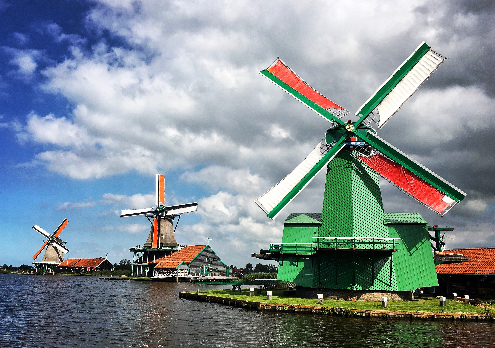
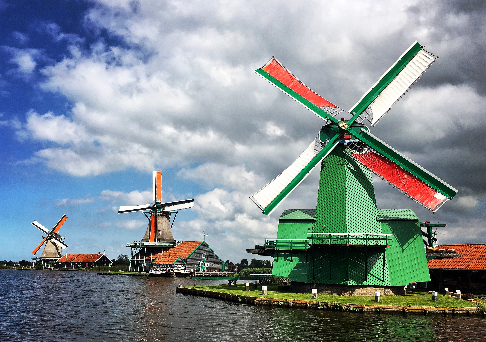

Alex Moreno
I am experienced in marketing, analytics, and client satisfaction. As a naturally curious person, I'm motivated and excited by the challenge of learning new information, techniques, and skills. Most recently, that includes creating this website, learning how to conduct statistical analysis in R, staying up to date with research in Nutrition, or listening to podcasts of various topics. With family from the Dutch Caribbean and having lived in Tel Aviv, Israel after graduation to work in the startup world, I have exposure to and appreciation for different cultures, and I love capturing memorable sights and moments through photography when I travel.
Experience
Digital Marketing Analytics Consultant (Contract)
Support regional eCommerce and brand stakeholders across company, ensuring proper analytical approaches to their marketing strategies.
Data Strategy Analyst
Highlighted areas for improved operational performance of sales consultants using MS SQL, DOMO dashboards and Excel reports.
Advertiser Account Manager and Analyst
Grew numerous client advertising accounts while ensuring positive ROI via in-depth analysis of digial marketing campaigns.
Business Intelligence Analyst Intern
Provided key insights and actionable recommendations to client Procter & Gamble regarding its CPG products in various markets.
Education
University of Pennsylvania
Minors: Consumer Psychology (Wharton Business School) & Nutrition (Nursing School)
Extracurriculars: Phi Kappa Psi Fraternity (Social Chair 2012-2013), Penn Course Review (Co-Editor-in-Chief), Heavyweight Crew, Latin & Ballroom Dancing
Maret School
Skills
- Excel and PowerPoint
- SQL and MS SQL Server
- R and RStudio
- Tableau and DOMO
- Adobe Analytics and Google Analytics
- Salesforce
- Quickbase and Jira
Interests
I'm passionate about nutrition and the power of food as it relates to health. I love experimenting with healthy alternatives to delicious classics. When I travel, I make it a point to scope out unique food joints, and I'm always excited to check out options at local farmers markets.
I also enjoy staying active and playing tennis. I'm a big fan of playing board games, and I'm also always excited to see a new play or musical.
I'm very interested in growing my coding skills as well as my analytical toolkit, and I enjoy doing so through online courses.
Finally, I love traveling and exploring new cultures. Take a look at some of my recent adventueres in the next section!
I was an extra on the TV show Greek
Nitro Cold Brew is my favorite drink
I taught an Origami class at Borders in the 6th grade
Artwork


Travel Photos


 
